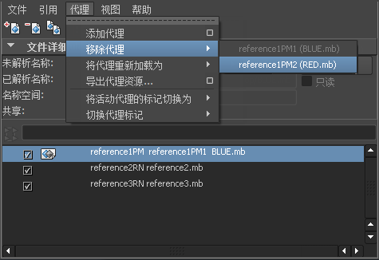

本节介绍“引用编辑器”(Reference Editor)的菜单项和选项。
“文件”(File)菜单
- 创建引用(Create Reference)
- 从引用导入对象(Import Objects from Reference)
-
将选定引用的对象直接导入到当前场景中。请参见导入文件引用。
- 导出当前选择(Export Selection)
-
将选定对象作为引用导出，并将该引用链接到当前场景中。可以在此处设置选项（请参见“文件 > 导出当前选择”(File > Export Selection)）。文件浏览器将打开，以使用指定的名称和位置保存文件。
- 保存引用编辑(Save Reference Edits)
-
将在父场景内为某个选定文件引用进行的编辑保存到磁盘上相应的被引用文件。编辑得到传递，这样它们就不再位于父场景内。请参见引用编辑。
- 导出到脱机文件(Export to Offline File)
-
将对场景中的对象（即连接的节点）所做的更改导出到指定的文件。然后可以使用“指定脱机文件”选项将这些编辑应用于其他场景。请参见导出到脱机文件。
常规选项(General Options)
- 文件类型(File type)
-
将文件类型设置为“editMB”或“editMA”。默认为“editMA”。
- 默认文件扩展名(Default file extensions)
-
为 Maya ASCII 文件名添加文件扩展名 .ma，并为 Maya 二进制文件名添加文件扩展名 .mb。
目标选项(Target Options)
- 导出节点(Export nodes)
-
设置要导出哪些场景对象的编辑。选定对象导出所有选定对象的编辑。被引用文件为在“引用编辑器”(Reference Editor)中选定的所有引用导出编辑。
包括选项(Include Options)
设置要在导出中包括的编辑的类型。
引用选项(Reference Options)
- 包括 setAttr 编辑(Include setAttr edits)
-
导出对 setAttr 属性所做的编辑。
文件类型特定选项(File type specific options)
- 使用节点上属性的全名(Use full names for attributes on nodes)
-
显示节点属性的全称。
- 指定脱机文件(Assign Offline File)
-
从所选择的文件引用编辑，并将它们应用于在“引用编辑器”(Reference Editor)中选定的引用节点。Maya 通过将编辑文件中的每个 nodename.attribute 与所应用到的文件相匹配来应用编辑。
例如，可以在场景 sphere.ma 中为 pSphere1.translateX 导出一个引用编辑。该编辑会在引用文件中保存为 <main>:sphere_pSphere1.translateX。然后可以将该编辑应用于场景 ball.ma，以便编辑 ball:pSphere1.translateX。请参见指定脱机文件
常规选项(General Options)
- 应用方式(Apply via)
-
允许作为任一被引用编辑应用编辑，或者直接将编辑导入到场景中。会将导入的编辑烘焙到主场景中，且无法像被引用编辑那样进行卸载。
- 文件类型(File type)
-
从下拉列表中选择要导入的文件类型。如果不确定要应用哪种文件类型，则可以选择“最佳推测”(Best Guess)。
根据所选择的文件类型，可能会显示文件类型特定选项。
名称空间选项(Namespace Options)
- 使用名称空间
-
如果在启用“使用名称空间”(Use namespaces)的情况下引用或导入场景，则 Maya 将创建包含被引用数据的新名称空间。启用“使用名称空间”(Use namespaces)可确保所有节点都具有唯一的名称。请参见名称空间和在引用或导入时创建名称空间。
提示：在引用文件之前，请确保重命名前缀不包含任何无效字符。
当前设置的名称空间是在“名称空间选项”(Namespace Options)部分中由
 图标指示的。当前设置的名称空间的父名称空间是由
图标指示的。当前设置的名称空间的父名称空间是由  图标指示的。当前名称空间可以在“名称空间编辑器”(Namespace Editor)中通过单击“设置当前空间名称”(Set Current)进行设置。请参见名称空间编辑器概述和编辑名称空间。
图标指示的。当前名称空间可以在“名称空间编辑器”(Namespace Editor)中通过单击“设置当前空间名称”(Set Current)进行设置。请参见名称空间编辑器概述和编辑名称空间。
名称空间不影响 Maya 的当前选择、DAG、依存关系图或任何其他方面。
- 使用选定的名称空间作为父对象并添加新的名称空间(文件名) (Use selected namespace as parent and add new namespace (file name))
-
指定将引用的文件名添加到对象名称空间的开头。
例如，如果引用或导入的名为 foo.ma 的场景中包含名为 ball 的对象，则其名称空间为 foo:ball。
- 使用选定的名称空间作为父对象并添加新的名称空间字符串(Use selected namespace as parent and add new namespace string)：
-
指定将文本字符串添加到对象名称的开头。在显示的字段中键入字符串。
- 合并到选定名称空间并重命名匹配的传入对象(Merge into selected namespace and rename incoming objects that match)
-
将对象的名称空间与现有的选定名称空间合并。
如果出现重复的名称空间，将合并这些名称空间，并且重复的对象名称将以递增的数字作为后缀。使用此选项可以避免在每次引用或导入具有相同名称空间的对象时累积新的名称空间。
节点名称替换对象
在将其应用于场景时，允许对脱机编辑文件执行文本替换。可以指定一组或多组替换文本，并按它们在列表中显示的顺序将它们应用到文件。
例如，如果需要替换应用于名为 sphere1 的对象的所有编辑，并将这些编辑应用于名为 sphere2 的对象，则会在“搜索”(Search for)字段中键入 sphere1，并在“替换为”(Replace with)字段中键入 sphere2，然后单击“添加”(Add)。
- 搜索(Search for)
-
键入要搜索的节点名称，然后单击“添加”(Add)。会将节点名称添加到列表区域中。若要移除节点名称，请在列表区域中选择它，然后单击移除(Remove)。
- 替换为(Replace with)
- 键入要用作替换对象的节点名称，然后单击“添加”(Add)。会将节点替换对象规则添加到列表中。若要从列表中移除替换对象，请选择它，然后单击“移除”(Remove)。
文件类型特定选项(File Type Specific Options)
- 使用节点上属性的全名(Use full names for attributes on nodes)
-
显示节点属性的全称。
- 列出引用编辑(List Reference Edits)
-
显示选定引用上的当前编辑列表。可以通过单击“刷新编辑列表”(Refresh Edits List)按钮手动刷新该窗口，或者通过选择特定编辑再单击“移除选定编辑”(Remove Selected Edits)移除这些编辑。请参见列出、复制或移除引用编辑。
- 列出未知编辑(List Unknown Edits)
-
如果引用 Maya 6.5 或更早版本中的文件，则转化过程可能无法识别某些编辑。此处列出了这些未知的编辑。可以通过单击“刷新编辑列表”(Refresh Edits List)按钮手动刷新该窗口，或者通过选择特定编辑再单击“移除选定编辑”(Remove Selected Edits)移除这些编辑。
- 清理引用(Clean Up Reference)
-
从目标引用节点移除所有编辑。
注：仅当确信不再需要将移除的编辑时，才应使用“清理引用”(Clean Up Reference)。在已加载的引用上使用“清理引用”(Clean Up Reference)会移除无法应用的所有编辑。在已卸载的引用上使用“清理引用”(Clean Up R fe ence)将移除所有编辑（无论是否可以应用它们），因此应小心使用该功能以避免意外的数据丢失。
- 选择文件内容(Select File Contents)
-
选择选定引用文件中的所有项目。
“引用”(Reference)菜单
- 重新加载引用/卸载引用(Reload Reference/Unload Reference)
-
加载或卸载选定的引用。如果已加载当前引用，重新加载会更新已加载的引用。正在同时编辑引用文件时，这是很有用的。请参见卸载和重新加载文件引用。
- 加载相关引用/卸载相关引用(Load Related Reference/Unload Related Reference)
-
加载或卸载与选定对象相关的引用。
例如，如果需要在不必打开“引用编辑器”(Reference Editor)的情况下卸载对象以及对象所属的引用，并弄清楚应卸载哪个引用，只需在对象上单击鼠标右键 (
 )，然后选择“卸载相关引用”(Unload Related Reference)即可。同样，可以选择一个定位器或注释，然后加载其相关引用（必须同时选择定位器/注释和养父节点才能进行该操作）。
)，然后选择“卸载相关引用”(Unload Related Reference)即可。同样，可以选择一个定位器或注释，然后加载其相关引用（必须同时选择定位器/注释和养父节点才能进行该操作）。
- 复制引用(Duplicate Reference)
-
复制与选定引用相关联的文件。请参见复制文件引用。
- 替换引用(Replace Reference)
-
打开文件浏览器以使用所选引用替换当前引用。组节点和/或定位器保持不变。
- 最新替换的文件(Recently Replaced Files)
-
列出最新替换的引用文件。
- 移除引用(Remove Reference)
-
从场景文件移除选定引用和关联的引用节点。这是移除引用及其关联的节点的首选方法。
- 锁定引用/取消锁定引用(Lock Reference/Unlock Reference)
-
为选定的文件引用锁定或取消锁定所有节点和属性。一个锁定图标显示在引用编辑器内列出的文件引用的旁边，指示锁定状态。请参见锁定文件引用。
“代理”(Proxy)菜单
-
添加代理(Add Proxy) >

-
向当前选定的文件引用添加代理引用。选择“代理 > 添加代理”(Proxy > Add Proxy) >
后，可以指定要添加的文件类型，并在出现的“代理选项”(Proxy Options)窗口内设置“代理标记选项”(Proxy Tag Options)。
注：也可以在“引用编辑器”(Reference Editor)中从上下文相关菜单中访问“代理选项”(Proxy Options)菜单项。若要显示该菜单，请选择文件引用，然后在该项目上单击鼠标右键 (
)。
如果对于文件引用不存在代理引用，则对于该文件引用，会为代理引用创建一个代理集。如果存在代理引用，则新代理会变为该引用的现有代理集的一个成员。
创建代理引用时，列出的文件引用将更新，以显示一个图标，用于指示对于该引用，存在一个或多个代理引用。
常规选项(General Options)
- 文件类型(File type)
-
选择下次添加代理引用时要用作默认格式的文件格式。如果设置了一个项目，则当打开场景时，浏览器会指向包含该类型文件的目录。在 Windows 和 Mac OS X 上，它还可以设置过滤器以仅显示选定类型的文件。
代理选项(Proxy Options)
- 共享编辑(Shared Edits)
-
在场景中对代理所做的编辑会自动更新该代理的源文件。
- 将代理标记设置为(Set proxy tag to)
-
为要应用于代理引用的代理标记键入文本字符串，或者从下拉菜单的列表中选择现有标记。如果代理标记在此列表中以灰色显示，则表示该标记已用于该此特定的文件引用。代理标记将显示在“引用编辑器”(Reference Editor)中。
创建代理标记之后，将可以在“代理选项”(Proxy Options)和“引用选项”(Reference Options)窗口中的“代理标记选项”(Proxy Tag Options)下拉菜单中选择该代理标记。
在某个给定的代理集内，代理标记必须是唯一的。也就是说，如果一个代理标记在某个代理集内不在使用中，则该代理标记可供同一个代理集使用。可以创建自己的标记，并在不同的代理集中重用它们。
文件类型特定选项(File Type Specific Options)
根据所选择的“文件类型”(File Type)，会在此处显示各种“文件类型特定选项”(File Type Specific Options)。请参见打开选项(Open Options)。
- 移除代理(Remove Proxy)
-
从“移除代理”(Remove Proxy)子菜单内显示的代理标记列表中移除所选的代理引用。
在基于其代理标记的菜单中会显示可用的代理引用列表。代理标记列表是从当前在所选代理集内使用的所有代理标记中生成的。当代理标记显示为灰色时，指示当前已加载该标记。
从代理集移除代理引用，且仅剩余单一文件引用时，会移除代理集，且引用会返回到某个常规引用状态。在“引用编辑器”(Reference Editor)中，从列出的文件引用中移除图标，并会更新列出的文件引用名称。
注：不可能移除已加载的代理。若要移除当前加载的代理，必须首先从列表中重新加载任何其他代理引用，以便需要移除的代理变得在列表内可供移除。
- 将代理重新加载为(Reload Proxy As)
-
从“将代理重新加载为”(Reload Proxy As)子菜单内显示的代理标记列表中加载所选的代理引用。代理标记列表是从当前在所选代理集内使用的所有代理标记中生成的。当代理标记显示为灰色时，指示当前已加载该标记。
“将代理重新加载为”(Reload Proxy As)用于为给定的文件引用在代理引用之间进行切换。在基于其代理标记的菜单中会显示可用的代理引用列表。当代理标记显示为灰色时，指示当前已加载该标记。
注：仅当选定的代理标记与特定代理集的其中一个可用标记匹配时，才会重新加载该代理集的代理。例如，如果选择了多个代理集并选择了 high 代理标记进行重新加载，则将仅重新加载具有 high 标记的那些代理引用。不包含 high 标记的所有代理集将保持不变。
-
导出代理资产(Export Proxy Asset) >
-
为选定资产（被引用的或未被引用的）导出代理资产。有关代理资产的详细信息，请参见代理资产。
有关代理资产选项，请参见资产 > 导出代理资产(Assets > Export Proxy Asset)。
- 将活动代理的标记切换为(Switch tag for Active Proxy to)
-
允许更改活动代理的代理标记。可以在场景中从所有代理标记列表中选择，或者可以定义一个新代理标记（“定义新标记”(Define New)）。从先前存在的代理标记列表中选择时，在当前活动代理集中使用的那些标记将灰显。
- 切换代理标记(Switch Tag for Proxy)
-
允许在当前选定代理集中更改所有代理的代理标记。
“视图”(View)菜单
- 查看选定引用(View Selected References)
-
仅显示选定的引用。
选择该选项还会创建一个新的“引用查看集”(Reference View Set)，可以在“视图”(View)菜单中找到该引用查看集。该“引用查看集”(Reference View Set)充当一个书签；将来选择创建的“引用查看集”会在“引用编辑器”(Reference Editor)中过滤引用，并仅显示当创建“引用查看集”时选择的引用。
请参见引用查看集。
- 查看所有引用(View All Reference)
-
显示当前场景中的所有引用。
文件详细信息(File Particulars)
在“引用编辑器”(Reference Editor)中选择了被引用文件时，将显示以下文件信息。通过在三角形上单击，可以选择显示或隐藏该信息。
- 未解析名称(Unresolved Name)
-
显示包括被引用文件的名称的相对或绝对路径，该路径不包括 Maya 搜索该文件的位置。
- 已解析名称(Resolved Name)
-
显示 Maya 找到文件的文件名和路径。
- 名称空间(Namespace)
-
显示选定文件引用的当前名称空间。可以在文本字段内编辑文件引用的名称空间。（启用“使用名称空间”(Use Namespaces)时，会出现该字段。）
注：- 必须已使用名称空间选项创建文件引用，才可以编辑其名称空间。也就是说，无法编辑使用更早的文件重命名前缀约定创建的引用。
- 如果已卸载文件引用，则无法编辑名称空间。
- 输入的新名称空间不能已经存在。
- 仅对于从当前打开场景所进行的引用，才可以编辑引用的名称空间。也就是说，对于嵌套在其他文件引用内的引用，无法编辑其名称空间。
- 重命名前缀(Rename Prefix)
-
显示在发生名称冲突时可以应用于对象名称的前缀。（启用“使用名称空间”(Use Namespaces)时，会出现该字段。）